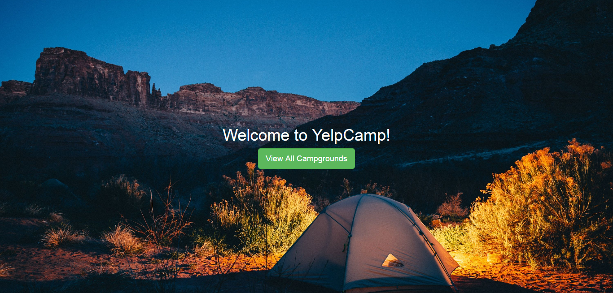

Portfolio


Junior Front End Web Developer with a passion and excitement for creating web applications using MEN stack for simple and scalable fullstack applications. Skilled in design and development as well as back-end scripting and database administrations. Enthusiastic for driving innovation with the ability to follow industry and technology trends and standards, and facilitating the early adoption of up and coming innovations.
Second Class Honors.
Apart from improving my development skills, I am an avid gym-goer and kickboxer, trying to live a healthy lifestyle. I enjoy photography and the outdoors in general, with a massive passion for travelling and exploring.
I also enjoy cooking at home as well as exploring new delicacies. And once the meal is cooked, chilling out with a decent movie or tv show.